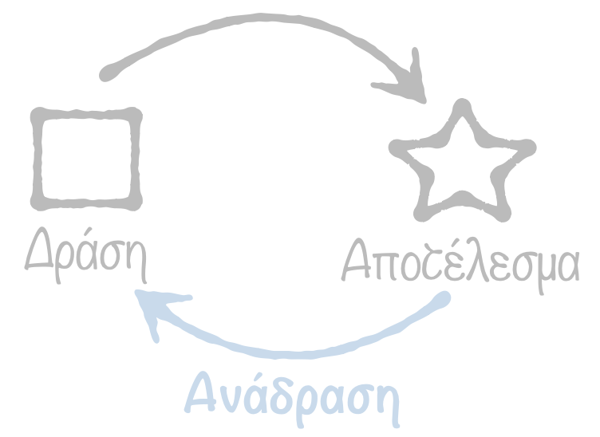
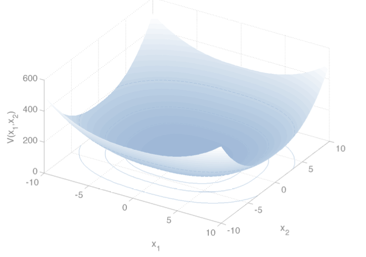

Teaching & Student Projects
| Χειμερινό Εξάμηνο - Fall Semester
|
| ΗΜΥ 326: Εισαγωγή στα Συστήματα Αυτομάτου Ελέγχου - ECE 326: Introduction to Control Theory (in Greek)
|

Εκπαιδευτικοί στόχοι:
Ο φοιτητής/τήτρια με την επιτυχή ολοκλήρωση το μαθήματος θα είναι σε θέση να:
- κατανοεί τις βασικές έννοιες και θεμελιώδεις αρχές λειτουργίας των συστημάτων αυτομάτου ελέγχου
- κατανοεί και χρησιμοποιεί μεθόδους μοντελοποίησης και ανάλυσης των φυσικών συνιστωσώντων διαφόρων τύπων φυσικών συστημάτων
- μελετά τη συμπεριφορά των διαφόρων τύπων φυσικών συστημάτων στα πεδίο χρόνου και συχνότητας
- εκπονεί σχέδια διασύνδεσης επιμέρους δομικών στοιχείων για τη σύνθεση συστημάτων ελέγχου
- διερευνά θεμάτα που σχετίζονται με την ευστάθεια συστημάτων ελέγχου, με τη χρήση των κατάλληλων τεχνικών και μεθόδων
| Εαρινό Εξάμηνο - Spring Semester
|
| ΗΜΥ 498Ε: Συστήματα Αυτομάτου Ελέγχου Διακριτού Χρόνου: Θεωρία και Εφαρμογές - ECE 498E: Discrete-time control systems: Theory and Applications (in Greek)
|

Εκπαιδευτικοί στόχοι:
Ο φοιτητής/τήτρια με την επιτυχή ολοκλήρωση το μαθήματος θα είναι σε θέση να:
- κατανοεί τις βασικές έννοιες και θεμελιώδεις αρχές λειτουργίας των συστημάτων ελέγχου με υπολογιστές
- κατανοεί τις βασικές ιδέες και διαφορές μεταξύ συστημάτων ελέγχου συνεχούς και διακριτού χρόνου
- κατανοεί και χρησιμοποιεί μεθόδους μοντελοποίησης και ανάλυσης συστημάτων διακριτού χρόνου
- μελετά της συμπεριφορά των διαφόρων συστημάτων διακριτού χρόνου στα πεδίο χρόνου και συχνότητας
- εκπονεί σχέδια διασύνδεσης επιμέρους δομικών στοιχείων για τη σύνθεση συστημάτων ελέγχου
- διερευνά θεμάτα που σχετίζονται με την ευστάθεια συστημάτων ελέγχου, με τη χρήση των κατάλληλων τεχνικών και μεθόδων
- μελετά κλασσικές τεχνικές σχεδίασης ρυθμιστών/ελεγκτών διακριτού χρόνου
| ECE 621: Stochastic Processes
|
Course description:
The objective is to introduce you to the models and techniques of Stochastic Processes, in order to get familiar with how stochastic models and techniques are used in a diverse range
of applications, focusing on some from Engineering.
| Διαθέσιμες διπλωματικές εργασίες - Available student thesis projects
|
Students interested to pursue their thesis under my supervision and wish to suggest their own project idea, please contact me via email.
| Τρέχουσες διπλωματικές εργασίες - Ongoing student thesis projects
|